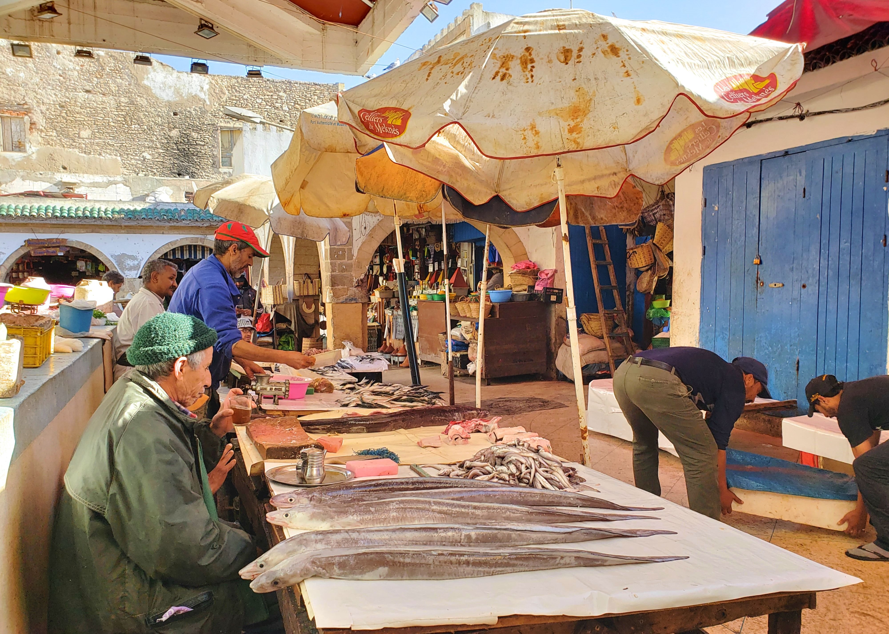
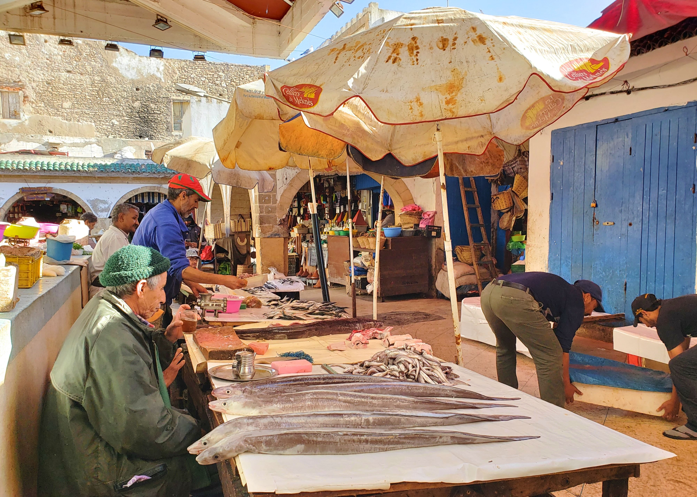

Début décembre j’ai eu le plaisir de séjourner au Jardin des Douars et de visiter Essaouira, ville côtière du sud du Maroc. Ce n’est pas la première fois que je voyage au Maroc, ma meilleure amie étant marocaine j’ai déjà posé mes valises là-bas à 6 reprises ! Après Tanger, Chefchaouen, Marrakech, Rabat, Fès et le désert du Sahara, j’ai enfin découvert Essaouira !
Pour ma part Essaouira ne s’est pas révélée au premier coup d’œil et il m’a fallu 2 escapades en ville pour en apprécier le charme et comprendre l’attrait des marocains et des touristes pour cette ville. C’est qu’Essaouira est toute petite et je suis habituée aux villes impériales marocaines ! Ici en quelques heures on en a fait le tour. Mon conseil si vous passez plusieurs jours à Essaouira : prévoyez des activités (quelques idées ci-dessous) et séjournez dans un hôtel canon où il fera bon se relaxer (là encore, méga bon plan ci-dessous). Le mix ville, hôtel, activités vous permettra de ne jamais vous ennuyer tout en vous reposant au soleil ! Le meilleur hôtel à Essaouira : le Jardin des Douars


 



Mais en quelques mots ici : le Jardin des Douars c’est THE hôtel parfait à Essaouira. Tout au jardin des Douars invite au repos et au bonheur. Un mot sur l’équipe : adorable, souriante, aux petits soins. Un pur bonheur d’être choyé par un personnel aussi pro que discret et disponible.
Le port d’Essaouira Un sacré bazar que le port d’Essaouira ! Des mouettes, des étals de fortune et des filets de pêche au sol, le tout par centaines. Beaucoup d’agitation et de bruit. Un spectacle pour le moins dépaysant ! Si vous décidez d’y assister longuement, gare aux fientes d’oiseaux… pensez à un couvre-chef ! Personnellement j’ai trouvé surprenant et fascinant mais je n’ai pas eu envie d’y passer plus de 10 minutes.
Que faire à Essaouira ?
| Activités | ||
|---|---|---|
| Cours de cuisine | l'Atelier café-boutique | 50€/pers. |
| Ballade à cheval | Equi Evasion | 15€/pers. |
| Soirée de musique spirituelle | Riad Casa Lila | 35€/pers. |
| Manger du poisson frais | restaurant du port | 25€/pers. |